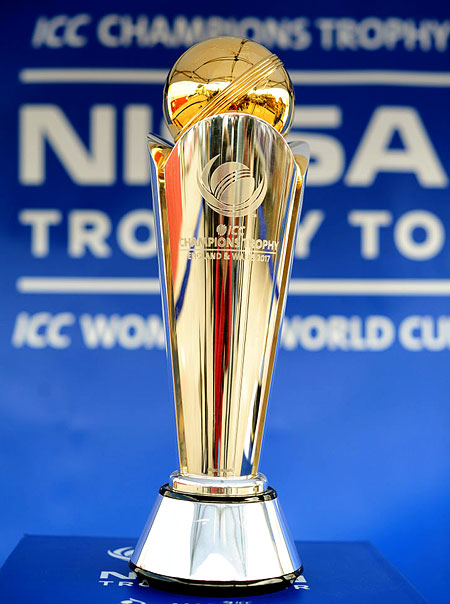
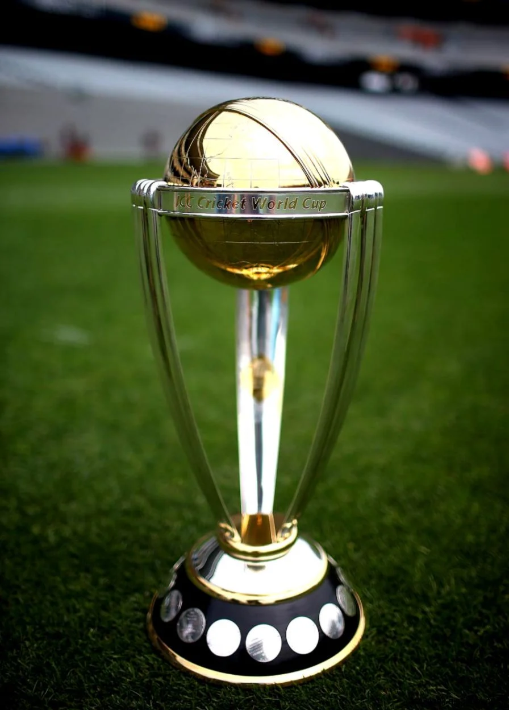

As you know TATA IPL 2023 has begun today 31st March 2023 and here we are providing the IPL winners list from 2008 to 2023. The Indian Premier League began in 2008, a year after the Indian cricket team won the first edition of the World T-20 against Pakistan in a thrilling final. IPL started as an ambitious project 16 years ago and is now considered the best Twenty-20 league in the world. Mumbai Indians team is the most successful IPL team, having won the tournament five times and having finished runners-up on one occasion. Chennai Super Kings is the other team to have lifted the IPL title on four occasions while they have finished second once.

IPL
The ICC Champions Trophy is a One-Day International (ODI) cricket tournament organised by the International Cricket Council. The 2013 tournament was intended to be the final edition of the Champions Trophy, but it was extended to 2017 due to its widespread popularity. In 2018, the ICC decided to replace the tournament with the World Twenty20 championship to be held every two years, and no Champions Trophy was contested in 2021.[3][4][5] However, as part of the 2021 Future Tour Programme, the event was reinstated for the 2025 cycle onwards. In November 2021, the ICC confirmed the tournament would next take place in 2025 in Pakistan, with India hosting the tournament in 2029.
CHAMPIONS TROPHY
The Cricket World Cup, officially known as ICC Men's Cricket World Cup,[4] is the international championship of One Day International (ODI) cricket. The event is organised by the sport's governing body, the International Cricket Council (ICC), every four years, with preliminary qualification rounds leading up to a finals tournament. The tournament is one of the world's most viewed sporting events and is considered the "flagship event of the international cricket calendar" by the ICC.[5]The first World Cup was organised in England in June 1975, with the first ODI cricket match having been played only four years earlier..
